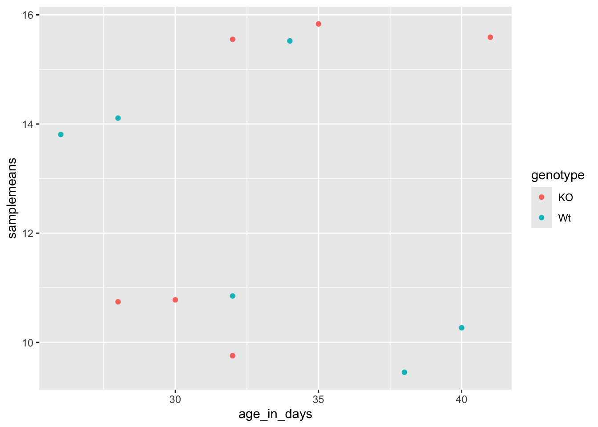
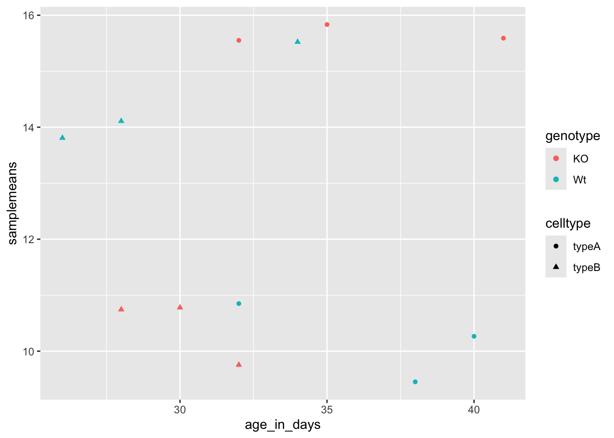
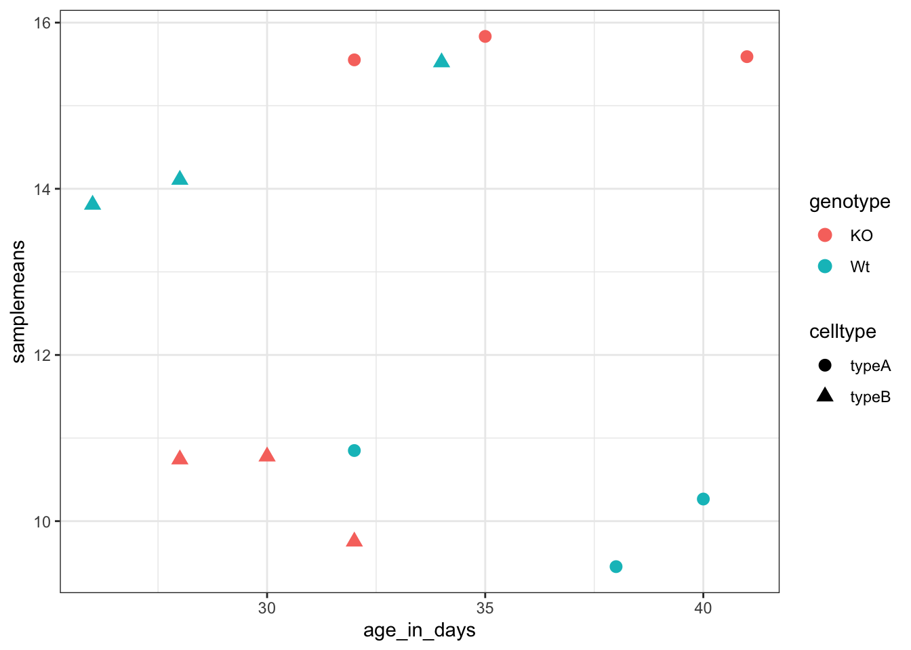
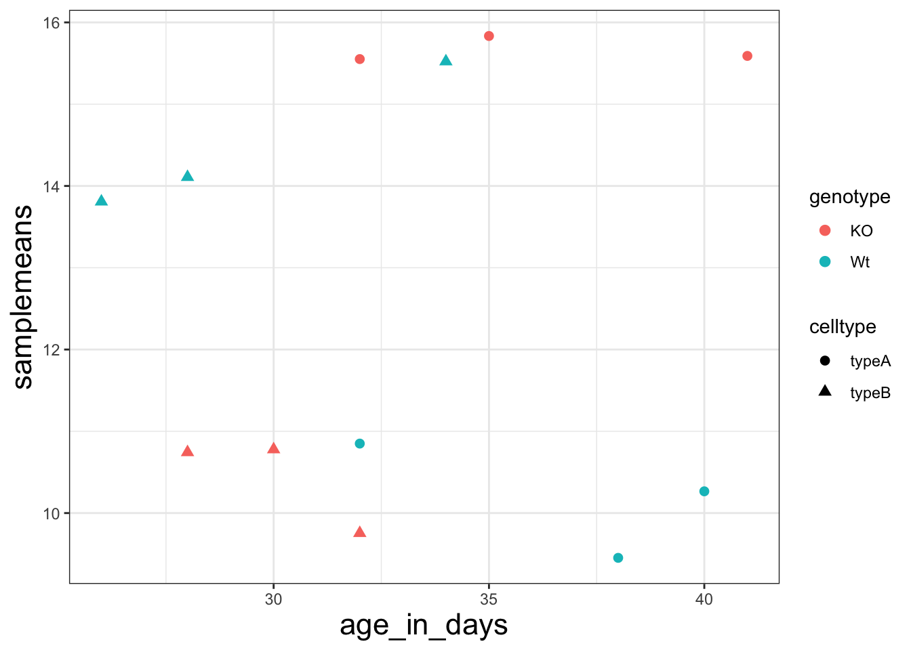

## load the new_metadata data frame into your environment from a .RData object
load("../data/new_metadata.RData")Plotting and data visualization in R
Approximate time: 60 minutes
Learning Objectives
- Explain the syntax of ggplot2
- Apply ggplot2 package to visualize data.
Data Visualization with ggplot2
For this lesson, you will need the new_metadata data frame. Please download it from here to your project’s data folder by right-clicking and “save file as” or “download file as”.
Once you have downloaded it, load it into your environment as follows:
Next, let’s check if it was successfully loaded into the environment:
# this data frame should have 12 rows and 5 columns
View(new_metadata)Great, we are now ready to move forward!
When we are working with large sets of numbers it can be useful to display that information graphically to gain more insight. In this lesson we will be plotting with the popular Bioconductor package ggplot2.
Note
If you are interested in learning about plotting with base R functions, we have a short lesson available here.
The ggplot2 syntax takes some getting used to, but once you get it, you will find it’s extremely powerful and flexible. We will start with drawing a simple x-y scatterplot of samplemeans versus age_in_days from the new_metadata data frame. Please note that ggplot2 expects a “data frame” or “tibble” (you can find out more about tibbles in the lesson on tidyverse) as input.
Let’s start by loading the ggplot2 library:
library(ggplot2)The ggplot() function is used to initialize the basic graph structure, then we add to it. The basic idea is that you specify different parts of the plot using additional functions one after the other and combine them into a “code chunk” using the + operator; the functions in the resulting code chunk are called layers.
Let’s start:
ggplot(new_metadata) # what happens? 
Note
If you don’t have the new_metadata object, you can right-click to download and save an rds file from here into the project data folder, and load it in using:
new_metadata <- readRDS("../data/new_metadata.rds")You get an blank plot, because you need to specify additional layers using the + operator.
The geom (geometric) object is the layer that specifies what kind of plot we want to draw. A plot must have at least one geom; there is no upper limit. Examples include:
- points (
geom_point,geom_jitterfor scatter plots, dot plots, etc) - lines (
geom_line, for time series, trend lines, etc) - boxplot (
geom_boxplot, for, well, boxplots!)
Let’s add a “geom” layer to our plot using the + operator, and since we want a scatter plot so we will use geom_point().
ggplot(new_metadata) +
geom_point() # note what happens hereWhy do we get an error? Is the error message easy to decipher?
We get an error because each type of geom usually has a required set of aesthetics to be set. “Aesthetics” are set with the aes() function and can be set either nested within geom_point() (applies only to that layer) or within ggplot() (applies to the whole plot).
The aes() function has many different arguments, and all of those arguments take columns from the original data frame as input. It can be used to specify many plot elements including the following:
- position (i.e., on the x and y axes)
- color (“outside” color)
- fill (“inside” color)
- shape (of points)
- linetype
- size
To start, we will specify x- and y-axis since geom_point requires the most basic information about a scatterplot, i.e. what you want to plot on the x and y axes. All of the other plot elements mentioned above are optional.
ggplot(new_metadata) +
geom_point(aes(x = age_in_days, y= samplemeans))
Now that we have the required aesthetics, let’s add some extras like color to the plot. We can color the points on the plot based on the genotype column within aes(). You will notice that there are a default set of colors that will be used so we do not have to specify. Note that the legend has been conveniently plotted for us.
ggplot(new_metadata) +
geom_point(aes(x = age_in_days, y= samplemeans, color = genotype)) 
Let’s try to have both celltype and genotype represented on the plot. To do this we can assign the shape argument in aes() the celltype column, so that each celltype is plotted with a different shaped data point.
ggplot(new_metadata) +
geom_point(aes(x = age_in_days, y= samplemeans, color = genotype,
shape=celltype)) 
The data points are quite small. We can adjust the size of the data points within the geom_point() layer, but it should not be within aes() since we are not mapping it to a column in the input data frame, instead we are just specifying a number.
ggplot(new_metadata) +
geom_point(aes(x = age_in_days, y= samplemeans, color = genotype,
shape=celltype), size=2.25) 
The labels on the x- and y-axis are also quite small and hard to read. To change their size, we need to add an additional theme layer. The ggplot2 theme system handles non-data plot elements such as:
- Axis label aesthetics
- Plot background
- Facet label backround
- Legend appearance
There are built-in themes we can use (i.e. theme_bw()) that mostly change the background/foreground colours, by adding it as additional layer. Or we can adjust specific elements of the current default theme by adding the theme() layer and passing in arguments for the things we wish to change. Or we can use both.
Let’s add a layer theme_bw().
ggplot(new_metadata) +
geom_point(aes(x = age_in_days, y= samplemeans, color = genotype,
shape=celltype), size=3.0) +
theme_bw() 
Do the axis labels or the tick labels get any larger by changing themes?
No, they don’t. But, we can add arguments using theme() to change the size of axis labels ourselves. Since we will be adding this layer “on top”, or after theme_bw(), any features we change will override what is set by the theme_bw() layer.
Let’s increase the size of both the axes titles to be 1.5 times the default size. When modifying the size of text the rel() function is commonly used to specify a change relative to the default.
ggplot(new_metadata) +
geom_point(aes(x = age_in_days, y= samplemeans, color = genotype,
shape=celltype), size=2.25) +
theme_bw() +
theme(axis.title = element_text(size=rel(1.5))) 
Note
You can use the example("geom_point") function here to explore a multitude of different aesthetics and layers that can be added to your plot. As you scroll through the different plots, take note of how the code is modified. You can use this with any of the different geometric object layers available in ggplot2 to learn how you can easily modify your plots!
Note
RStudio provide this very useful cheatsheet for plotting using ggplot2. Different example plots are provided and the associated code (i.e which geom or theme to use in the appropriate situation.) We also encourage you to peruse through this useful online reference for working with ggplot2.
Exercises
- The current axis label text defaults to what we gave as input to
geom_point(i.e the column headers). We can change this by adding additional layers calledxlab()andylab()for the x- and y-axis, respectively. Add these layers to the current plot such that the x-axis is labeled “Age (days)” and the y-axis is labeled “Mean expression”. - Use the
ggtitlelayer to add a plot title of your choice. - Add the following new layer to the code chunk
theme(plot.title=element_text(hjust=0.5)).
- What does it change?
- How many theme() layers can be added to a ggplot code chunk, in your estimation?